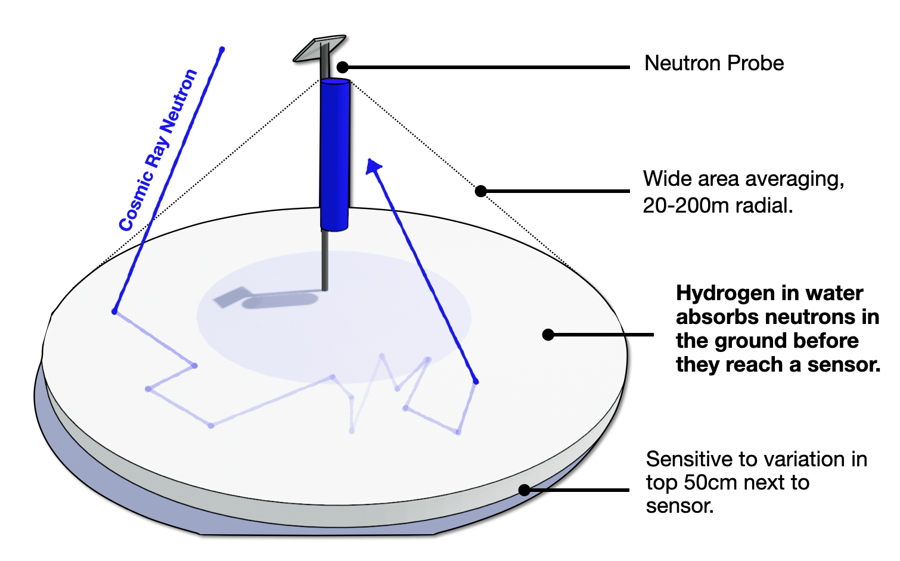
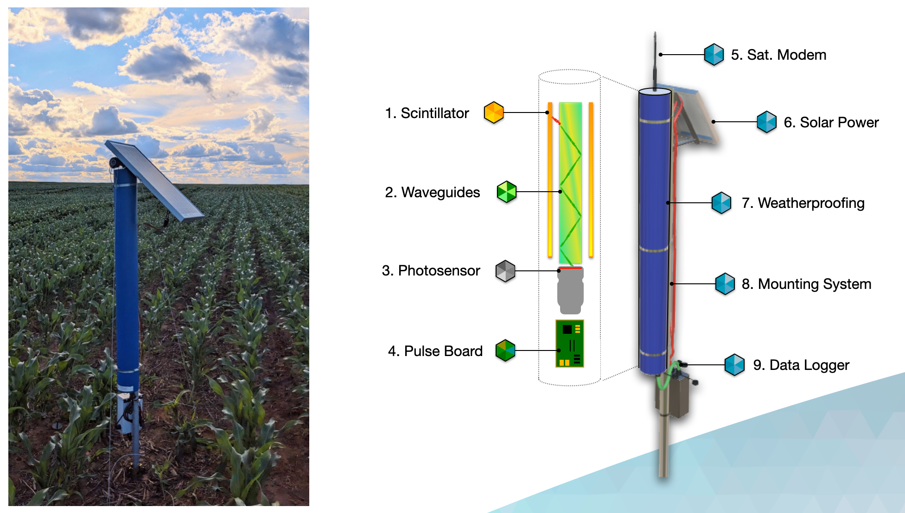

ARTICLE
How does CosmicRay work? A deep dive into the sensors and how they monitor the Greenland Ice Sheet.
At the heart of CosmicRay lies the neutron sensors, the focus of the research done by the group
at Sheffield.
To understand these sensors and their capabilities, we need to understand what cosmic rays are, where they originate, and what they reveal about the Greenland Ice Sheet.
From Supernova
However, first, it is crucial to understand what a cosmic ray is. The term, coined by Robert Millikan in 1925, is used to describe rapid particles that travel across space as a result of events such as supernovae (stars exploding) and solar flares from the sun. These particles consist of muons and neutrons, which means they are charged and carry energy with them through space.
Once these particles are released, they are catapulted at lightspeed through space, until some inevitably hit Earth. Trillions of these particles hit our atmosphere every day, with most blocked by our magnetic field.
Despite this, many still pierce the field, making contact with other particles in our atmosphere. When this occurs, the cosmic rays shatter into a shower of secondary particles, which are the muons and neutrons mentioned earlier.
The above describes their journey from space, but for us to find a use for them, we have to create equipment capable of detecting these particles.
To Snow
CosmicRay’s aim within the ARIA program is to develop sensors capable of detecting the ice sheet’s melting rates in real time, but how do they do this?
Firstly, the shower of particles will land on the Greenland Ice Sheet. Once this happens, they will go into the snow or ice.
Due to their speed, they will bounce back out of the ground, but when they are inside the ground, hydrogen atoms found in water have the property of absorbing the particles and lowering their energy afterwards.
If these particles have landed within approximately 200 metres of a CosmicRay detector, there are two possibilities:

These two outcomes mean that when there is increased water or snow coverage around the base of a sensor, fewer particles will be detected.
Inside the sensor

The sensor itself is an intricate piece of machinery with plenty of parts, from the power system to the smaller sensors, but to fully understand it, we can look at each part individually:
Testing the Sensor
To ensure these sensors are suitable, they must go through rigorous testing. Firstly, to know that the equipment works in general, a physics lab set up just outside the department building serves as a radiation testing facility.
Radioactive materials are used as a setting up the sensor to detect cosmic rays would be too time-consuming and would require the whole sensor to be constructed. Since radioactive particles work similarly to cosmic rays, this allows for effective and safe testing, with the testing room itself surrounded by thick concrete.
Secondly, to ensure that the sensors can withstand the cold, it is not a good idea to send them out without subjecting them to prolonged exposure to cold temperatures.
On the outskirts of Sheffield, there is the Laboratory for Verification and Validation, set up by the University of Sheffield’s Engineering department. In this building, there are “climatic test rooms” which can emulate the conditions found in Greenland, making them perfect for testing the sensors.
What does the data mean
The sensor’s ability to detect the amount of water and snow on the ice sheet means that they are able to monitor the melting rates as a result.
The CosmicRay sensors will be able to capture data in real time, without human interaction after installation. Therefore, there will always be live information on the melting rates of the ice sheet.
The gap often found in melting data, specifically in the middle of the ice sheet, means there will be a massive benefit in understanding from these sensors.